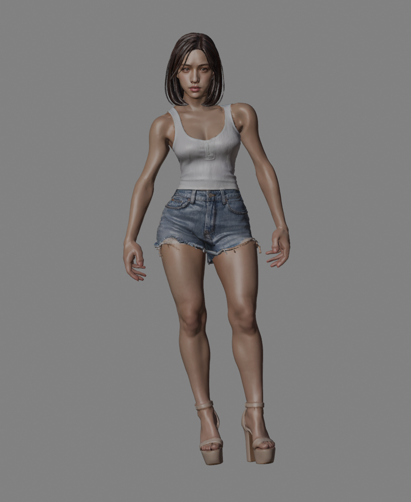
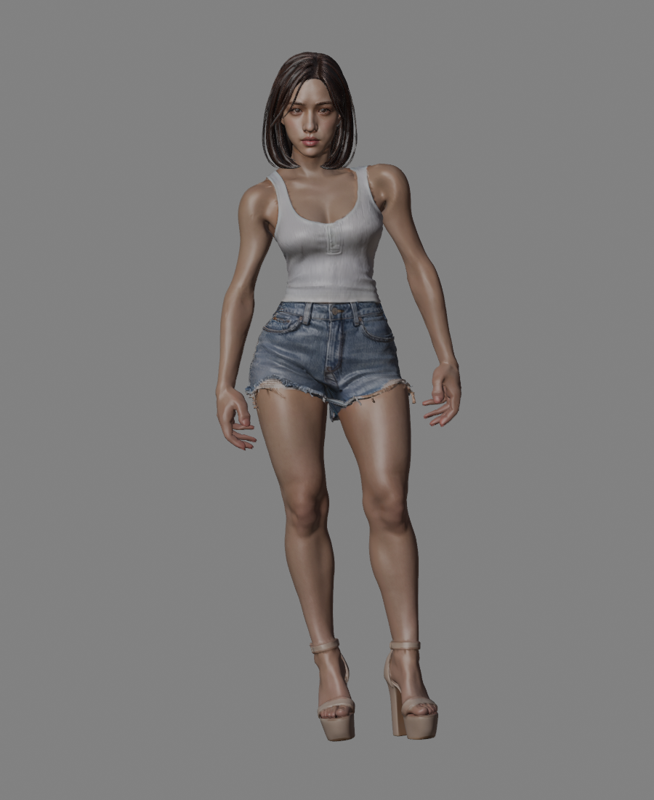
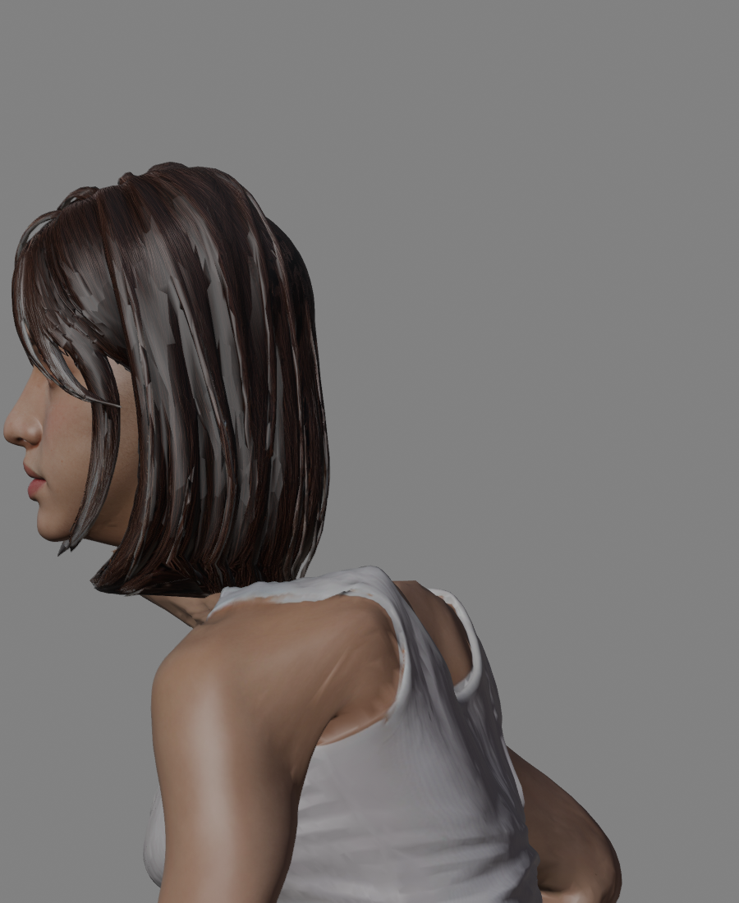
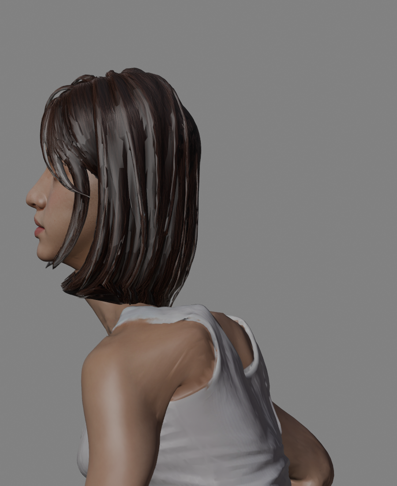
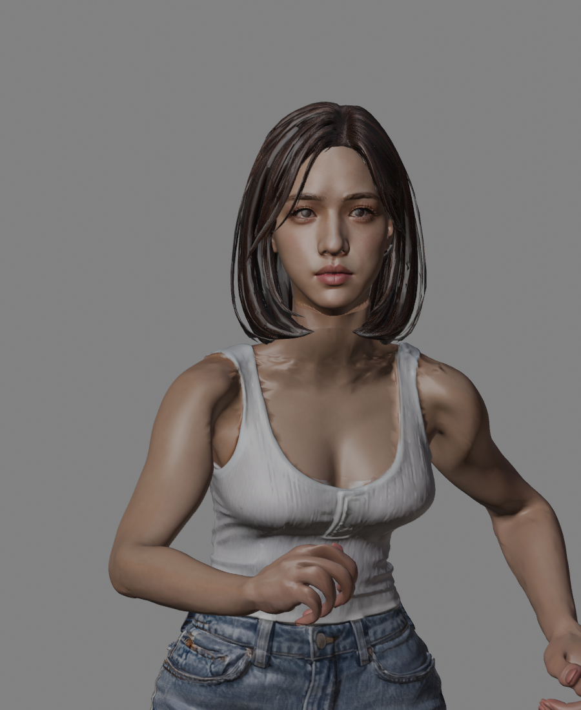
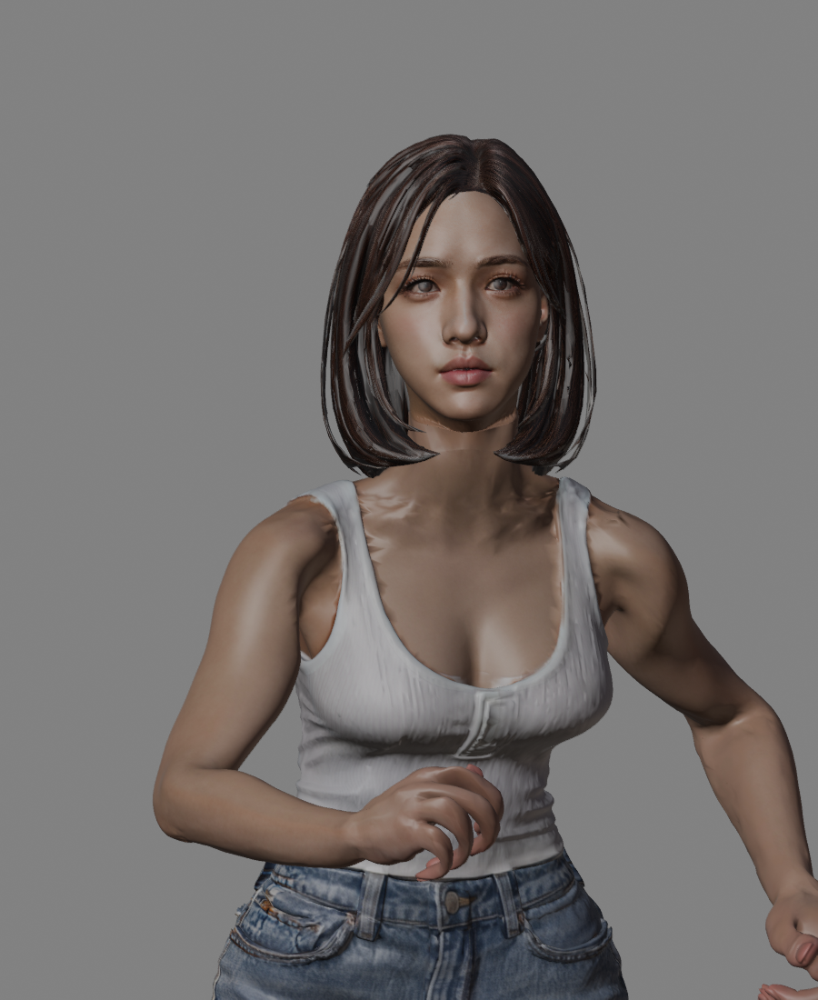
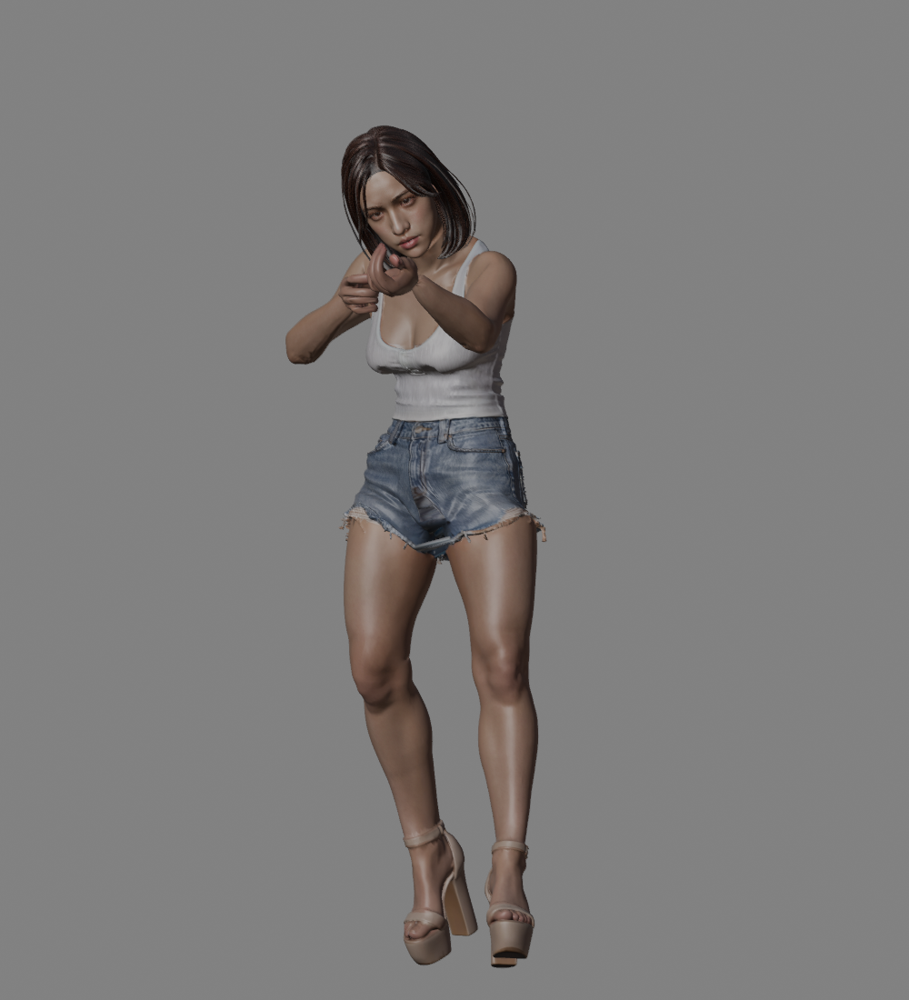
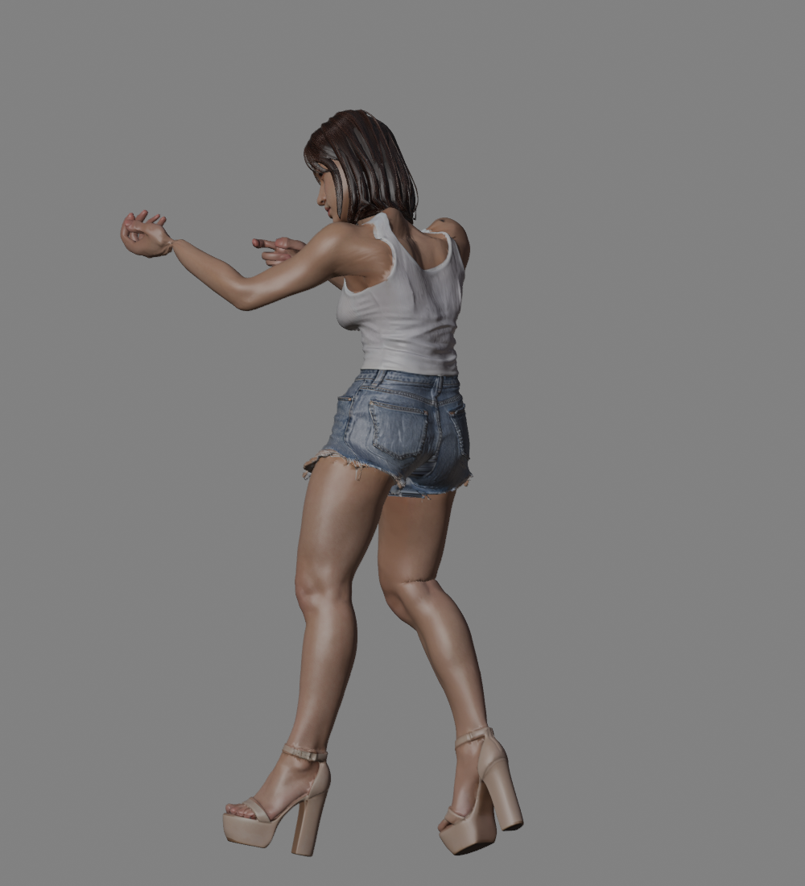
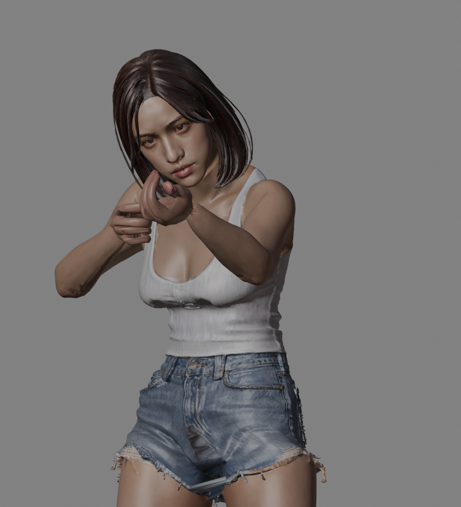

夏晴 R7 · 姿态修正与瞄准
人物网格、蒙皮与骨架休止位置保持R6。仅本地保存，未部署。
待机：减轻双臂张开，保留手腿间距
R6 修改前R7 向内微收
待机后半段

修改前
贴近大腿时限制内收跑步：减轻颈部前探

修改前，Run70%时刻
修改后，颈部回收并补偿视线
跑步正面修改前
修改后仍保留身体前倾新增 Aim 瞄准待机

正面：握持与视线适配
侧面：高跟鞋站姿适配
手指握持；源动作文件没有枪械模型。